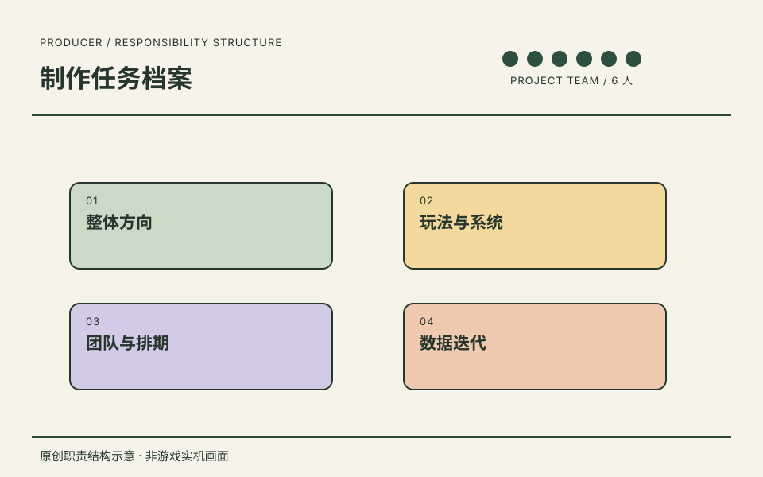

01 / 制作任务档案
北京简游科技有限公司.
在一个共 6 人的项目团队中，负责游戏方向、玩法系统与推进节奏。

游戏制作人
在一个共 6 人的项目团队中，负责游戏方向、玩法系统与推进节奏。
项目团队共 6 人，不等同于 6 名直接下属。职责不包含美术表现、发行运营。
职责与关注点
- 01整体方向
- 02玩法与系统
- 03团队与排期
- 04数据迭代
项目详情
这一章的记录
在一个共 6 人的项目团队中，负责游戏方向、玩法系统与推进节奏。
- 任职公司
- 北京简游科技有限公司
- 角色
- 游戏制作人
- 时间
- 2026.07.27—至今
任职、角色与职责依据本人履历及确认。图示是本站原创的职责结构表达。